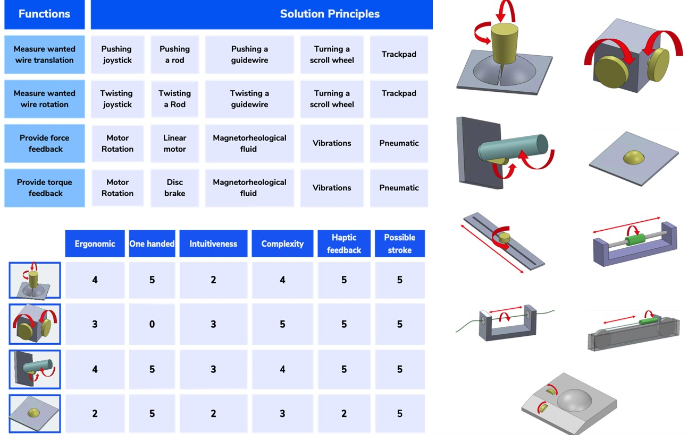
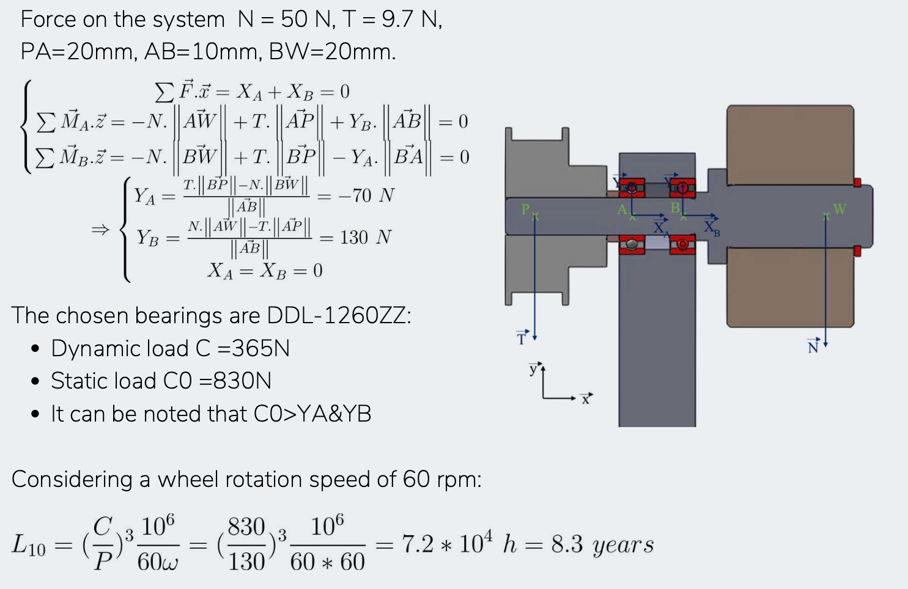

Design exploration
- Functional decomposition.
- Morphological matrix.
- Decision-making matrix.

REHAssist - EPFL
Removing blood clots requires high dexterity, while the X-rays needed to see the procedure are harmful for the surgeon. Force feedback teleoperation is a solution that does not compromise dexterity or safety.



Patent pending EP25181805